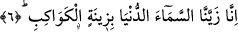
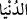
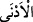
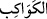
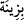

olarak da her çeşide göre terbiye etmek mânâsındadır. Buna göre Allah Teâlâ çeşitli
nimetleriyle bedenleri, lütuf ve keremiyle ruhları, şeriatın hükümleriyle âbidlerin
nefislerini, tarikatın âdâbıyla âşıkların gönüllerini ve hakikat nurlarıyla da sevgililerin
sırlarını terbiye etmektedir. Rab, duâların kendisine ulaştığı mercidir. Buna göre dua
eden kimsenin, duasının kabul olması için dilinde ve gönlünde rabbi hazır tutmalıdır.
Allah’ım! Rabbimiz! Elbette sen hakikat-i zâtiyye ile bir ve teksin. Bu vahdet ve
birlikte hiç bir ayrılma ve parçalanma yoktur. Allah’ım, sen bizim tevhidimizi mecaz
olmayan, hakkânî, zâtî ve sırrî tevhid eyle. Elbette sen çok cömert ve çok merhametli
olan rabsin. Allah’ım, sen bizim rabbimiz ve yaratıcımız olduğun gibi bizim
mürebbimiz ve Mevlâ’mızsın. Allah’ım, senin çeşitli nimetlerinin içinde dolaşıp
dururken sen bizleri başkalarından âzâde edip kendinle meşgul eyle! Bizlere her hayır
ve iyiliğini ulaştır!
6. Biz yakın göğü, bir süsle, yıldızlarla süsledik.
“Biz” size ve yere “yakın göğü” ilginç ve harika “bir süsle, yıldızlarla süsledik.”
Arşa göre bu dünya seması çok uzaktır. “
” kelimesi “
” kelimesinin
müennesidir. Çok yakın mânâsındadır. “
” kelimesi “
” kelimesinden bedel
olarak mecrûrdur. Dolayısıyla burada ziynetten murad edilen, ziynet ve süsün
kendisidir; “tezyin etmek” ve “süslemek” mânâsında olan mastar değildir. Zira yıldızlar
bizzat kendileri ve birbirleriyle olan konumları bakımından mükemmel ziynetlerdir. Bu
kavl-i ilâhîde havâs-avâm, özel-genel herkesin bileceği gözle görülebilen zâhirî ziynete
ve yalnız havas ve özel kimselerin bileceği aklî ziynete işaret edilmektedir. Bu da ziynet
olan bu yıldızların ahkâmı ve seyirleridir. Yıldızlar kandiller gibi semaya asılı
durumdadırlar. Yahut kapı ve sandık üzerindeki çiviler gibi göğe çakılı vaziyettedirler.
Yıldızların dünya semasının süsleri olması onların dünya semasına yerleşmiş
olmalarını gerektirmez. Yine bu durum bazı yıldızların diğer üst semalarda olmasına da
engel değildir. Zira gökler şeffaf ve billur gibi saf, berrak ve saydamdırlar. Buna göre
yıldızlar ister dünya semasında, ister diğer göklerde olsunlar, dünya semasında zahir
olup parıldayacaklardır. Sonuçta dünya seması yıldızlarla süslenmiş olacaktır. Hülasa
burada murad edilen bakan kimsenin gözünde ve görmesinde dünya semasının süslenmiş
olmasıdır. Ziynet olan bu yıldızların asıllarının dünya semasında yahut başka semalarda
olması fark etmez. Bu durum astronomi ve hey’et ehlinin görüşüne göredir. Onlara göre
sabit olan gök cisimleri sekizinci felekte yerleşmiş durumdadırlar. Aydan başka diğer
gök cisimleri ise ortadaki altı (felekte)dir. Gerçi bunlar ilmen sabit durumlar değildir.
Gerçek ilim Allah katındadır.